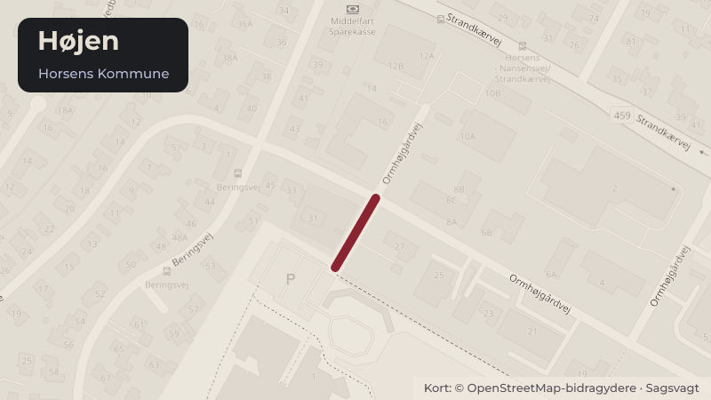

Besluttet 20. oktober, Økonomi- og Erhvervsudvalget, Horsens
SUU Anlægsbevilling til fase 2 i ombygningen af Højen 1 til Lundagerskolens elever
Skoler og børnBudget og økonomi

Kort fortalt
- Hvem
- Økonomi- og Erhvervsudvalget, Horsens Kommune
- Hvornår
- Tirsdag 20. oktober 2026
- Status
- Besluttet. Økonomi- og Erhvervsudvalget tiltrådte indstillingen.Beslutningen er forkortet her. Læs hele beslutningen
Er noget forkert her? Skriv til os
Læs hele sagen Kommunens egen tekst
Indstilling
Direktionen indstiller, at
1. Byrådet giver anlægsbevilling og rådighedsbeløb på 75 mio. kr. til etablering af fase 2
i ombygningen af Højen 1 til specialskole.
2. Byrådet godkender, at rådighedsbeløbet finansieres af Skole-, Unge- og
Uddannelsesudvalgets anlægspulje fordelt med 3,6 mio. kr. i 2026, 25 mio. kr. i 2027,
Sagsfremstilling
Byrådet besluttede i december 2021 at ombygge det tidligere gymnasium på Højen 1 til
specialskole for Lundagerskolens elever. I foråret 2022 blev der etableret en satellit til
Lundagerskolen i midlertidigt pavillonbyggeri, og i 2024 blev kapaciteten i pavillonbyggeriet
udvidet. Samme år begyndte fase 1 i ombygningen af det tidligere gymnasium.
Fra skoleåret 2025/2026 er de ca. 150 elever på Lundagerskolen samlet på én matrikel, men
fordelt mellem pavillonbyggeriet og den nye specialskole.
Fase 2 i ombygningen omfatter den resterende del af det tidligere gymnasium. Ombygningen
skal dels sikre, at Lundagerskolen kan flytte ud af det midlertidige pavillonbyggeri, og samtidig
udvides den samlede kapacitet til ca. 200 elever. Projektet er detailprojekteret i 2026, herunder
er erfaringer fra fase 1 indarbejdet i projektet. Der er afholdt udbud og projektet er nu klar til
igangsættelse
For at gennemføre den endelige ombygning i fase 2 ønskes en anlægsbevilling på 75 mio. kr.
Sammenholdt med den tidligere afsatte bevilling til detailprojektering af fase 2, så er det
samlede anlægsbudget på 76,2 mio. kr. Derudover renoveres taget på skolen i
projektperioden, som del af kommunens bygningsvedligehold.
Det forventes, at selve ombygningen påbegyndes ultimo 2026 og står færdig til ibrugtagning i
2028, herefter begynder nedtagning af pavilloner og ombygning af udearealer, der er færdig i
Bygningsdriften afholdes af allerede afsatte midler.
/SSN
Historik
Beslutning fra Skole-, Unge- og Uddannelsesudvalget, den 7. oktober 2026, punkt 5:
Skole-, Unge- og Uddannelsesudvalget tiltrådte indstillingen.
Beslutning
Økonomi- og Erhvervsudvalget tiltrådte indstillingen.
Michael Nedersøe og Andreas Boesen deltog ikke i mødet.
Kilde: Horsens Kommune, Økonomi- og Erhvervsudvalget, referat fra mødet tirsdag 20. oktober 2026, punkt 2. Læs den originale sag hos kommunen.
Steder i sagen: Højen